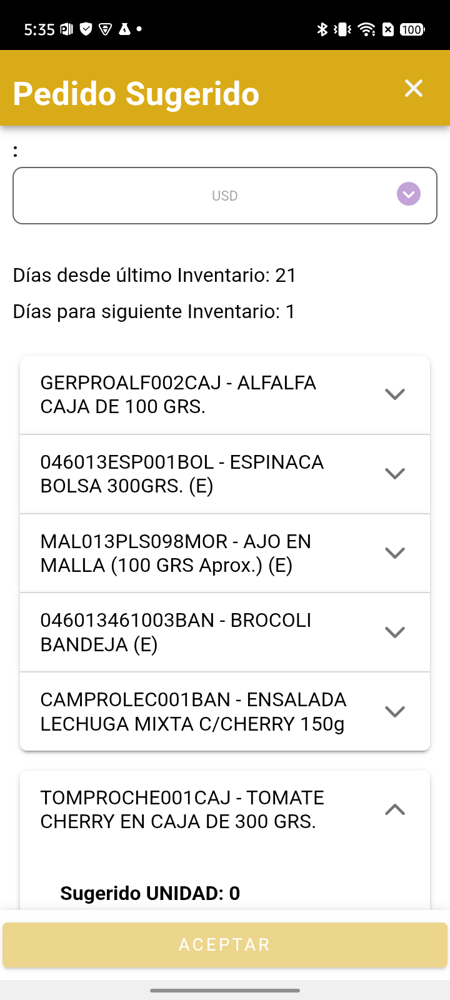
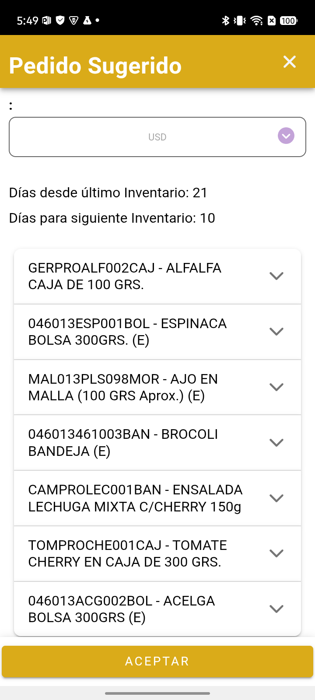
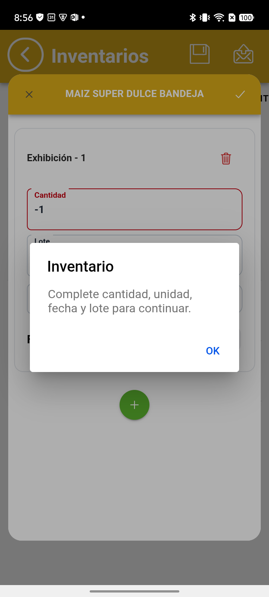
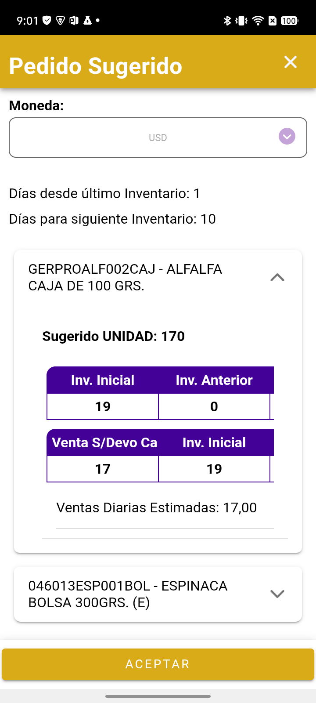
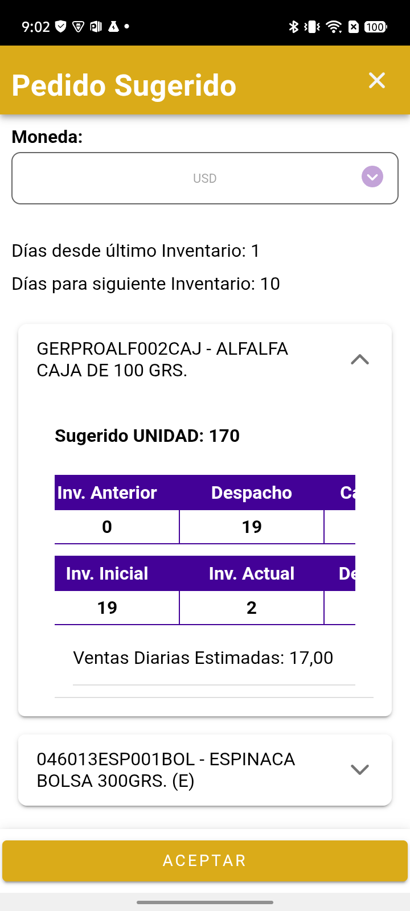
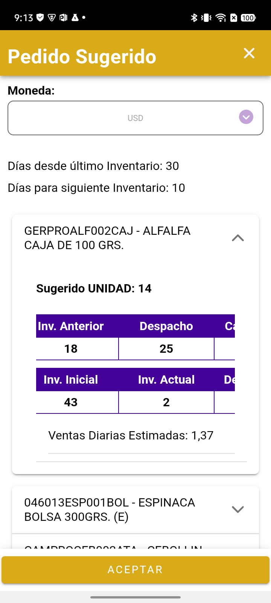
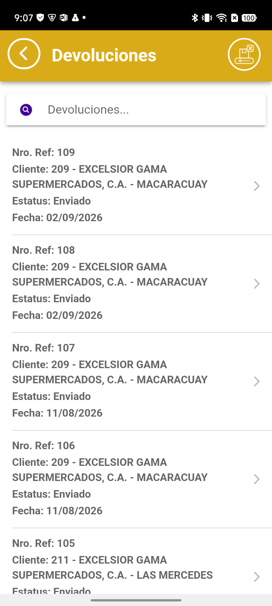
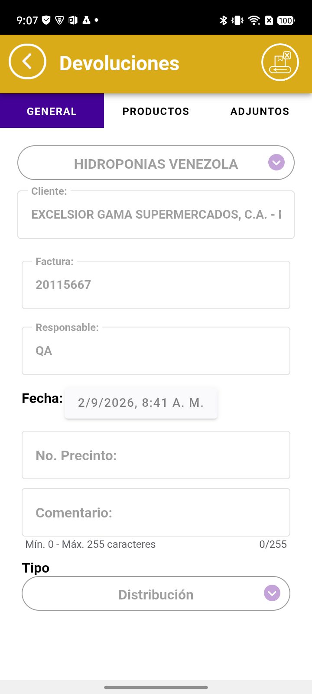

CONTROL DE CALIDADValidación de fix
01/09/2026
El despacho del pedido sugerido ya consolida todas las facturas del día
Módulo de Inventarios · Pedido Sugerido · Denario Premium Móvil · Cliente HIDROPONIAS VENEZOLANAS
| Qué se validó | Que el campo Despacho tome todas las facturas de la última fecha facturada, y no solo la última factura |
| Clientes de prueba | 209 · 211 · 105 — tres carteras independientes |
| Cliente y playa | HIDROPONIAS VENEZOLANAS C.A · El Caribe (confirmada en runtime) |
| Build / fix | 076faf27 · rama fix/invoices-Hidroponia-20260901 |
| Empresa · vendedor | HIDRO_A · login vendedor4 / id_user 468 |
| Registros de evidencia | Inventarios 51 a 54 · Pedidos 51 a 55 · Devoluciones 108 y 109 — todos Enviados y cotejados en nube |
| Resultado | 24 PASS · 0 FAIL · 1 caso retirado y rehecho (ver C6) · 1 no ejercitable por falta de dato |
✅ El fix cumple: los productos que el bug ocultaba volvieron con su cantidad exacta
Se midieron
7 productos del cliente 209, cuya última fecha facturada (23/07) tiene
dos facturas.
Los
4 que vivían solo en la factura descartada pasaron de
Despacho 0 a su cantidad real
(
19, 13, 20 y 7), los
2 de control quedaron idénticos y el que no se facturó ese día muestra
0 en vez de desaparecer.
Tolerancia 0 contra el oráculo de base de datos.
Alcance de este informe: valida el fix del despacho consolidado y, de paso, el
cambio x cambio, la generación del pedido sugerido, el REQ de quiebre de inventario
y el contraste Calidad vs Distribución en las devoluciones. La sección C6 documenta un
error de método cometido en el primer intento del quiebre, y cómo se rehizo.
El defecto, en una línea
El despacho salía de una sola factura —la que ganaba el desempate ORDER BY da_invoice DESC, id_invoice DESC LIMIT 1—
y todo lo facturado ese mismo día en otras facturas se perdía.
Cliente 209 · última fecha facturada 23/07/2026 · 2 facturas
20115667 (id 3828) → ganaba el desempate · 6 productos
20115666 (id 3827) → se descartaba entera · 8 productos ← se perdían
El «antes» no es una suposición: está medido por nosotros. En la corrida del 11/08
(hidroponias_sugerido_20260811) dejamos registrado que GERPROGCH002BOL y
GERPROALF002CAJ daban dispatchedStock = 0 justamente porque vivían en la factura perdedora.
Ese registro es la mitad «antes» de esta comparación.
Medición — cliente 209, tolerancia 0
El oráculo se construyó ejecutando la consulta del fix contra la base de datos del propio dispositivo
—la misma que consulta la app—, y el «antes» ejecutando la consulta vieja sobre los mismos datos.
| Producto | Stock tecleado |
Antes (bug) | Oráculo (fix) |
Medido en app | |
GERPROALF002CAJ | 3 | 0 | 19 | 19 | ✅ |
046013ESP001BOL | 2 | 0 | 13 | 13 | ✅ |
MAL013PLS098MOR | 5 | 0 | 20 | 20 | ✅ |
046013461003BAN | 4 | 0 | 7 | 7 | ✅ |
CAMPROLEC001BAN | 1 | 5 | 5 | 5 | control — sin cambio |
TOMPROCHE001CAJ | 12 | 14 | 14 | 14 | control — sin cambio |
046013ACG002BOL | 2 | 0 | 0 | 0 | sin factura ese día |
Los controles son la parte que prueba que el fix no rompió nada: los dos productos que ya
funcionaban —los que estaban en la factura ganadora— devolvieron exactamente el mismo valor que antes.
Resultado por criterio del encargo
| ID | Criterio | Resultado |
|---|
| C1 | Consolidar todas las facturas de la última fecha facturada | ✅ PASS |
| C2 | No romper el comportamiento previo (factura ganadora) | ✅ PASS |
| C3 | Producto sin factura ese día ⇒ muestra 0, ni vacío ni omitido | ✅ PASS |
| C4 | Si el mismo producto está en varias facturas del día, sumar las cantidades | ⚪ SIN DATO |
| C5 | Cambio x cambio sigue alimentando el sugerido | ✅ PASS |
| C6 | Quiebre de inventario — cantidad 0 al inventariar, y que persista | ✅ PASS |
| C7 | Devolución de Distribución RESTA del sugerido | ✅ PASS |
| C8 | Devolución de Calidad NO resta | ✅ PASS |
| C9 | Las cantidades negativas se siguen rechazando | ✅ PASS |
| C10 | Agotado con rotación genera reposición en el sugerido | ✅ PASS |
🔴 C4 — el único criterio que no pudimos probar, y por qué
Hay que separar dos cosas que suenan parecidas:
| Comportamiento | Estado |
|---|
| Consolidar varias facturas del mismo día — tomar los productos de todas ellas |
✅ PROBADO — es justo lo que demuestra la tabla de arriba:
4 productos entraron desde la factura que antes se descartaba. |
| Sumar el mismo producto repetido — cuando un producto aparece en dos facturas del día,
acumular sus cantidades |
⚪ NO PROBADO — no existe ese caso en la base de datos. |
Por qué no se pudo. El fix implementa la suma con
existing.quInvoice += item.qu_invoice. Para ejercitar esa línea hace falta un producto que
aparezca en dos facturas distintas de la misma fecha para el mismo cliente y sucursal.
Se consultó la base de datos completa de hidroponias —no solo la cartera del vendedor de prueba—
buscando cualquier producto en esa condición. El resultado fue cero filas: ningún cliente, en
ninguna fecha, repite un producto entre dos facturas del mismo día.
⇒ La línea de código existe y está bien escrita, pero nunca llegó a ejecutarse. No podemos
afirmar que la suma funcione, ni que falle. Queda sin cobertura.
Qué haría falta para cerrarlo: que alguien genere en el ambiente dos facturas del mismo día para
un mismo cliente y sucursal, con al menos un producto repetido en ambas. Con ese dato el caso se mide en
una sola corrida.
C5 — Cambio x cambio, medido en un segundo ciclo
En el cliente 209 el término salió 0 en los 7 productos, y es correcto: sus cambios x cambio
son del 04/08 y su último inventario del 11/08, así que caen fuera de la ventana de cálculo. Para medirlo
de verdad se usó el cliente 105 — CENTRAL MADEIRENSE (CAFETAL), el único de la cartera cuyo último
inventario (03/08) es anterior a sus cambios (04/08).
| Producto | Despacho |
Swap medido | Oráculo |
Inicial | Sugerido | |
046013461003BAN | 2 | 4 | 4 | 7 | 2 | ✅ |
CAMPROSDU002BOL | 5 | 1 | 1 | 6 | 2 | ✅ |
GERPROGCH002BOL | 0 | 2 | 2 | 5 | 0 | ✅ solo el swap aporta |
HIDPROBER001ATA | 0 | 1 | 1 | 1 | 0 | ✅ el inicial ES el swap |
Los dos últimos son los más concluyentes: tienen despacho 0, de modo que el cambio x cambio es
el único término que alimenta el stock inicial. En HIDPROBER001ATA el inicial es
exactamente el swap.
Comprobaciones de aritmética, los 4 productos:
inicial = previo + despacho + swap → ✅
vendido = inicial − actual − devuelto → ✅
diaria = vendido / 29 días → ✅
El sugerido genera unidades y llega a pedido enviado
La primera medición dio sugerido 0 en los 7 productos. No era un fallo: el formulario trae
«Días para siguiente Inventario» = 1 por defecto, y con ese valor el sugerido bruto queda por debajo
del stock actual en todos los casos, de modo que la guarda actual ≥ sugerido ⇒ 0 los apaga.
Al teclear 10 días, el sugerido cobró vida.
Con 1 día — todos en 0

Con 10 días — unidades reales

El mismo inventario, cambiando únicamente «Días para siguiente Inventario».
| Producto | Venta diaria | × 10 |
Sugerido | Actual | Qué prueba |
|---|
GERPROALF002CAJ | 0,9048 | 9,048 | 9 | 3 | redondeo hacia abajo |
046013ESP001BOL | 0,5238 | 5,238 | 5 | 2 | redondeo hacia abajo |
MAL013PLS098MOR | 0,7143 | 7,143 | 7 | 5 | redondeo hacia abajo |
CAMPROLEC001BAN | 0,1429 | 1,429 → 1 | 0 | 1 | guarda por IGUALDAD (1 vs 1) |
046013ACG002BOL | 0 | 0 | 0 | 2 | venta negativa ⇒ diaria 0 |
El sugerido llegó íntegro al pedido, con las 3 líneas de sugerido > 0 y excluyendo las de 0.
Verificado en la nube sobre el Pedido 51: qu_order = 9, 5 y 7,
exactamente lo sugerido. El inventario queda ligado al pedido que lo generó
(client_stock.id_order = 51).
C6 a C10 — Quiebre de inventario y devoluciones
Corrección de método, la contamos porque cambia lo que valen las pruebas. El primer
intento de validar el quiebre midió otra funcionalidad: se agregó a un pedido un producto
sin stock de almacén. Ese no es el REQ. El REQ —validado en Difranca el 13/08— es poder
escribir cantidad 0 al INVENTARIAR un producto agotado y que ese 0 persista.
Se rehizo el ciclo completo con el requerimiento a la vista, y es lo que sigue.
C7 y C8 — Calidad frente a Distribución
Se crearon dos devoluciones sobre productos distintos del mismo cliente y la misma
factura, para poder leer su efecto por separado en un único sugerido:
| Ref | Tipo | Producto |
Cant. | Devuelto | |
|---|
| 108 | Distribución (61) | CAMPROSDU002BOL |
2 | 2 | ✅ sí resta |
| 109 | Calidad (60) | TOMPROMAN001BAN |
3 | 0 | ✅ NO resta |
Es la prueba limpia: misma corrida, mismo cliente, mismo formulario. Se ve en la aritmética:
CAMPROSDU002BOL vendido = 15 − 2 − 2 = 11 ← el 2 de la Distribución SÍ entra
TOMPROMAN001BAN vendido = 5 − 2 − 0 = 3 ← si Calidad restara, sería 0
El mecanismo real no es un tipo fijo en el código, sino la columna
return_category.subtract_suggestion: Calidad → 'false',
Distribución → 'true'.
Un solo sugerido con las dos devoluciones aplicadas: la de Distribución descuenta, la de Calidad no.
C6 — Quiebre de inventario: cantidad 0 y su persistencia
| Paso | Resultado |
|---|
Teclear Cantidad = 0 al inventariar CAMPROLEC002BAN | ✅ aceptado |
| Guardar → la línea en la base local | ✅ qu_stock = 0 |
| Salir y reabrir el inventario guardado | ✅ las 3 líneas, el 0 incluido |
| Enviar → llegada a la nube (Inventario 53) | ✅ 0.00 en la nube |
🔑 C10 — el punto que conecta los dos requerimientos. CAMPROLEC002BAN quedó
agotado (actual 0) pero con rotación (despacho 7), y el sugerido le calculó
reposición 70 (7 × 10 días). Es exactamente el escenario que el REQ de quiebre pedía
comprobar: «un producto agotado con rotación genera la reposición esperada en el pedido
sugerido».
C9 — Los negativos siguen rechazados
Bajar el mínimo a cero no abrió la puerta a valores negativos:
- El campo de cantidad declara
min="0" — el piso es cero, no negativo.
- Al intentar aceptar con
−1, la app responde
«Complete cantidad, unidad, fecha y lote para continuar.»
- El modal no se cierra y no se agrega ninguna línea al inventario.

Intento de cargar −1: la aplicación lo rechaza y no deja avanzar.
Evidencia del cálculo: el campo Despacho en pantalla
El detalle del cálculo sí se ve en la aplicación: hay que desplegar el producto
dentro del modal del sugerido. Se muestra el testigo más claro —GERPROALF002CAJ,
el que bajo el bug daba Despacho 0 y ahora trae 19.
⚠ Las tablas del detalle se desplazan en horizontal: en pantalla solo caben dos columnas
de las cuatro. Por eso van dos capturas solapadas, con «Inv. Anterior» como columna
bisagra — aparece en las dos, de modo que se puede seguir la lectura sin cortes.
Vista inicial de la tabla

Desplazada: Despacho = 19

Izquierda: Inv. Inicial 19 · Inv. Anterior 0.
Derecha, tras desplazar: Inv. Anterior 0 · Despacho 19. La columna bisagra
(Inv. Anterior = 0) permite empalmar las dos vistas.
La aritmética completa que muestra la pantalla, para este producto:
Inv. Anterior 0 + Despacho 19 + Cambio por cambio 0 = Inv. Inicial 19
Inv. Inicial 19 − Inv. Actual 2 − Dev. Distribución 0 = Venta 17
Venta 17 / 1 día = Ventas Diarias Estimadas 17,00 → × 10 días = Sugerido 170
Corrección a una nota del ciclo de agosto. Aquel informe registró que «los términos no
están en el DOM, hay que leerlos del modelo». Sí están: se ven al desplegar el producto
dentro del modal. Lo que ocurre es que el acordeón nace colapsado y las tablas se recortan.
Segundo cliente: el fix se confirma en el 211
Para que la conclusión no dependiera de un solo caso, se repitió el ciclo completo en otro
cliente con la misma condición. Cliente 211 — EXCELSIOR GAMA (LAS MERCEDES),
id_client 171 · id_address_client 786, última fecha facturada
23/07 con dos facturas. daysSinceLast = 30.
| Producto | Antes (bug) | Oráculo |
Medido en app | |
|---|
GERPROALF002CAJ | 0 | 25 | 25 | ✅ |
046013ESP001BOL | 0 | 15 | 15 | ✅ |
CAMPROCEB002ATA | 0 | 10 | 10 | ✅ |
TOMPROCHE001CAJ | 20 | 20 | 20 | control — no se movió |
FRUPRO005001025 | 30 | 30 | 30 | control — no se movió |
Tres productos más recuperados, dos controles intactos. Sumados a los del cliente 209,
son siete productos que el bug ocultaba y que ahora traen su cantidad exacta, en
dos clientes independientes.

Cliente 211 · GERPROALF002CAJ: Inv. Anterior 18 + Despacho 25 = Inv. Inicial 43.
Bajo el bug ese Despacho era 0.
Este ciclo también aportó un término de devolución preexistente: CAMPROCEB002ATA
traía Dev. Distribución 6 de una devolución anterior del propio cliente, y el cálculo la
descontó. Cerró en Inventario 54 + Pedido 55 (5 líneas: 7 · 6 · 9 · 14 · 10).
Las devoluciones que montamos, y cómo las recoge el sugerido
Se crearon las dos devoluciones desde la aplicación, sobre el mismo cliente y la misma
factura, y quedaron Enviadas:
Las dos devoluciones creadas

Ref. 108 — tipo Distribución

Refs. 108 y 109, cliente 209, ambas Enviadas.
A la derecha, la 108 con su tipo Distribución.
Devolución 108 · Distribución · CAMPROSDU002BOL × 2
→ el sugerido de ese cliente muestra Dev. Distribución = 2 ✅ la recoge
Devolución 109 · Calidad · TOMPROMAN001BAN × 3
→ el sugerido muestra Dev. Distribución = 0 ✅ NO la cuenta, como debe ser
Cada término trae los datos de ESE cliente — control de aislamiento
No basta con que los números cuadren: hay que probar que no se mezclan con los de otros
clientes. La consulta del fix filtra por id_client y
id_address_client, así que se comparó lo medido en la app contra dos oráculos:
el acotado al cliente y el que no filtra. Si la app mezclara carteras, traería el segundo.
| Término | Producto | Acotado al cliente |
Si NO filtrara | Medido en app | |
|---|
Despacho
cliente 209 · suc. 780 |
GERPROALF002CAJ | 19 | 214 |
19 | ✅ |
Cambio x cambio
cliente 105 · suc. 726 |
046013461003BAN | 4 | 22 |
4 | ✅ |
La diferencia es enorme —19 frente a 214, 4 frente a 22—, así que no hay
posibilidad de confundir un resultado con otro. La app trajo en ambos casos el valor acotado
al cliente y su sucursal.
Devoluciones: qué sí y qué no se pudo controlar
| Aspecto | Estado |
|---|
| Discriminación por tipo |
✅ demostrada — mismo cliente y ventana, dos devoluciones:
la de Distribución descuenta 2, la de Calidad descuenta 0. |
| Aislamiento entre clientes |
⚪ sin control disponible — en la ventana de cálculo
solo existen las dos devoluciones creadas por esta prueba, ambas del cliente 209.
No hay devoluciones de otros clientes que pudieran haberse colado, así que
no se puede afirmar el aislamiento por contraste. Lo que sí consta es que la
consulta filtra por cliente en el código. |
✅ En resumen: cada término del sugerido trae lo de ESE cliente
Despacho — la suma de todas las facturas de la última fecha facturada
de ese cliente y
esa sucursal (19, no 214). ·
Cambio x cambio — los de ese cliente y esa
sucursal dentro de la ventana (4, no 22). ·
Devoluciones — las de ese cliente,
y
solo las de Distribución descuentan; las de Calidad no.
Alcance del fix: qué NO cambió
Devoluciones no se ve afectado, y está bien así. Se abrió una devolución para el cliente 209:
el selector ofrece las 4 facturas del cliente y, al elegir la 20115667, lista
exactamente sus 6 productos. Es correcto: en devoluciones se devuelve contra una factura
concreta, no contra el día. Las dos consultas son independientes.
Lo que este informe NO cubre
| Caso | Motivo |
|---|
| Suma del mismo producto repetido entre facturas del día |
No existe el dato en toda la base. Ver la sección de C4. |
| Devolución de Calidad en esta corrida |
Se confirmó que la de Distribución sí resta (devuelto = 2).
El contraste con Calidad quedó confirmado en la corrida del 11/08, no se repitió aquí. |
| Devolución de Calidad y Distribución en un mismo producto |
Se probaron en productos distintos para poder leerlas por separado. Combinarlas en
uno solo queda para una vuelta futura. |
Verificación en las TRES capas
Cada registro se comprobó en móvil (base local del dispositivo), nube (base de
datos del servidor) y web (interfaz administrativa de la playa Caribe).
| Registro | Móvil (BD local) | Nube (BD) |
Web (interfaz) |
|---|
| Inventario 51 · cliente 209 · 7 productos |
✅ enviado | ✅ 7 líneas |
✅ Enviado |
| Inventario 52 · cliente 105 · 4 productos |
✅ | ✅ 4 líneas |
✅ Enviado |
| Inventario 53 · cliente 209 · una línea en 0 |
✅ qu_stock 0 |
✅ 0.0000 |
✅ 0.00 UNIDAD |
| Inventario 54 · cliente 211 · 5 productos |
✅ | ✅ 5 líneas |
✅ Enviado |
| Pedidos 51 a 55 |
✅ los 5 | ✅ los 5 |
✅ los 5, Enviado |
| Devoluciones 108 y 109 |
✅ enviadas | ✅ en return_view |
⚪ no consultada |
El punto crítico del lado web: las líneas en cero no se filtran
El REQ de quiebre señalaba un riesgo específico en la web: «que el detalle no mostrara las
líneas en cero». No las filtra. El detalle del Inventario 53 muestra las tres líneas,
con la de cantidad cero incluida:
1 CAMPROSDU002BOL MAIZ SUPER DULCE BANDEJA Exhibición: 2.00 UNIDAD
1 CAMPROLEC002BAN ENSALADA LECHUGA MIXTA Exhibición: 0.00 UNIDAD ← el quiebre
1 TOMPROMAN001BAN TOMATE MANZANO EN BANDEJA Exhibición: 2.00 UNIDAD
Web · Inventario 53 con la línea en 0
Web · Pedido 55 con sus 5 líneas
Interfaz administrativa de la playa Caribe. El pedido 55 trae
7 · 6 · 9 · 14 · 10 — exactamente las cantidades que calculó el sugerido.
Nota de acceso: el inventario de playas registraba a Caribe fuera de servicio desde
el 13/08 (Tomcat arriba, aplicación no desplegada). Hoy responde con normalidad — conviene
actualizar esa nota. La consulta se hizo en modo solo lectura: únicamente Consultar
y navegación, sin tocar ningún control de escritura.
Puntos abiertos para desarrollo
1. La comparación de fechas es por texto
El fix compara con substr(da_invoice, 1, 10), es decir, tratando la fecha como
cadena. Hoy funciona porque el campo se almacena en formato ISO. Si alguna sincronización
guardara la fecha con otro formato, la comparación fallaría en silencio y el despacho volvería a
quedar incompleto sin mostrar ningún error. Es una fragilidad, no una falla.
2. La app se reinició una vez al pulsar Enviar
Ocurrió al enviar el pedido generado desde el sugerido. Sin traza FATAL en el log,
proceso vivo con PID nuevo, sesión intacta y colas limpias. No se pudo determinar la causa ni
reproducirlo. No se reporta como defecto: se registra como incidencia observada una vez.
3. Una cola local que no se limpió
El Inventario 52 quedó localmente en st_delivery = 2 y con una fila en
pending_transactions, pese a que la app anunció «Inventario nro. 52 enviado exitosamente»
y el registro llegó íntegro a la nube (estado enviado, 4 detalles, ligado al pedido).
No hay pérdida de dato, pero conviene verificar si esa cola se resuelve en la siguiente
sincronización o si puede provocar un reenvío duplicado.
4. ⚠ Se activó Row-Level Security en tres tablas durante la corrida
A media corrida, las consultas a client_stock, order e
invoice pasaron a devolver 0 filas, cuando horas antes respondían con datos.
No es pérdida de información: al revisar el catálogo del motor, las tres tablas tienen
ahora relrowsecurity = true y relforcerowsecurity = true, con
51, 53 y 793 filas respectivamente. Los datos están; el usuario de lectura de QA dejó de
verlos.
Por qué importa: una consulta a esas tablas devuelve vacío sin error. Quien coteje
por ahí concluirá que los envíos no llegan, y estará equivocado. Los cotejos de este informe se
completaron por las tablas de detalle (sin RLS) y por la web, que sí muestra todo.
Conviene confirmar si la activación fue deliberada y, en ese caso, ajustar los permisos del
usuario de QA.
Registros creados
| Ref | Tipo | Detalle | Nube |
|---|
| 51 | Inventario | Cliente 209 / sucursal MACARACUAY · 7 productos · días 21 / 10 | ✅ BD-OK |
| 51 | Pedido (desde sugerido) | 3 líneas — 9 / 5 / 7 | ✅ BD-OK |
| 52 | Inventario | Cliente 105 / sucursal CAFETAL · 4 productos · días 29 / 10 | ✅ BD-OK |
| 52 | Pedido (desde sugerido) | 2 líneas — 2 / 2 | ✅ BD-OK |
| 53 | Pedido | 1 línea — 046013ESP003BOL ×2 | ✅ BD-OK |
| 108 | Devolución Distribución | Cliente 209 · CAMPROSDU002BOL ×2 | ✅ BD-OK |
| 109 | Devolución Calidad | Cliente 209 · TOMPROMAN001BAN ×3 | ✅ BD-OK |
| 53 | Inventario | Cliente 209 · 3 líneas, una en cantidad 0 | ✅ BD-OK |
| 54 | Pedido (desde sugerido) | Cliente 209 · 3 líneas — 110 / 70 / 30 | ✅ BD-OK |
| 54 | Inventario | Cliente 211 · 5 productos · días 30 / 10 | ✅ BD-OK |
| 55 | Pedido (desde sugerido) | Cliente 211 · 5 líneas — 7 / 6 / 9 / 14 / 10 | ✅ BD-OK |
Sin transacciones fallidas en toda la corrida. Sin duplicados.

Denario Premium · Control de Calidad
Informe generado el 01/09/2026 · corrida fix_despacho_consolidado_20260901
Evidencia completa y consultas de oráculo en el reporte técnico de la corrida.